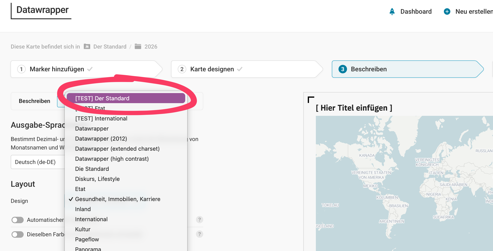
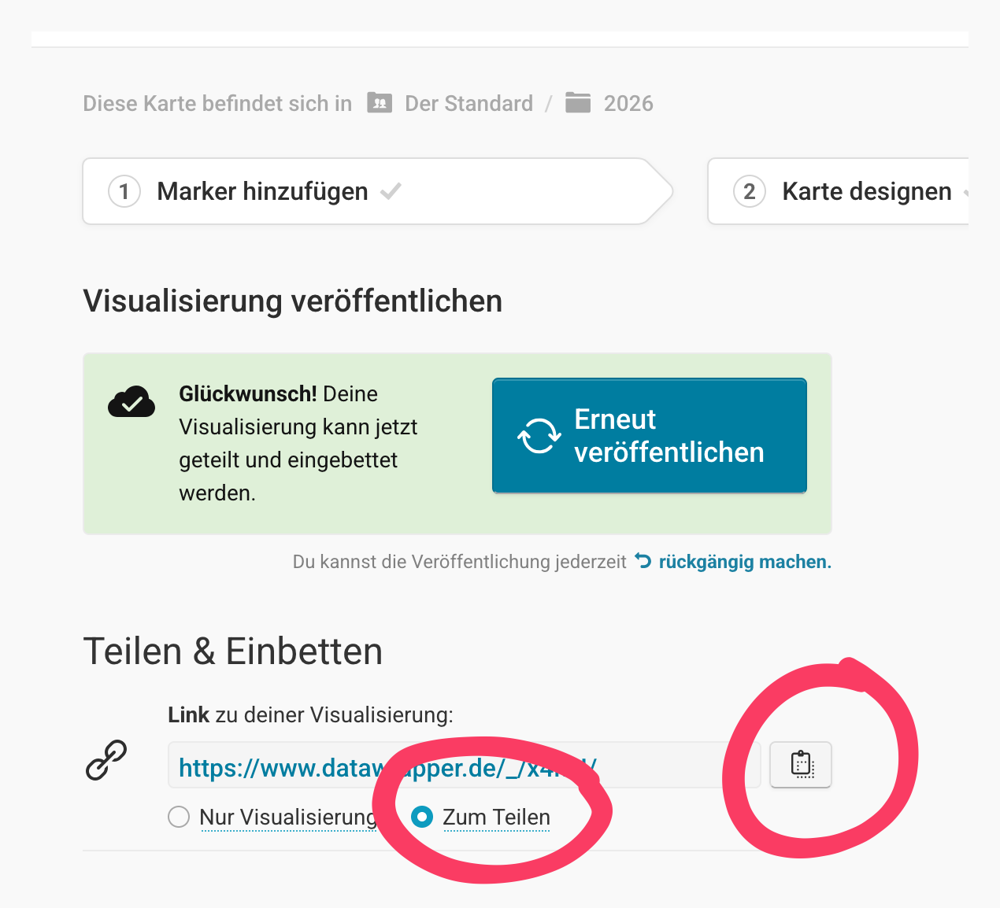
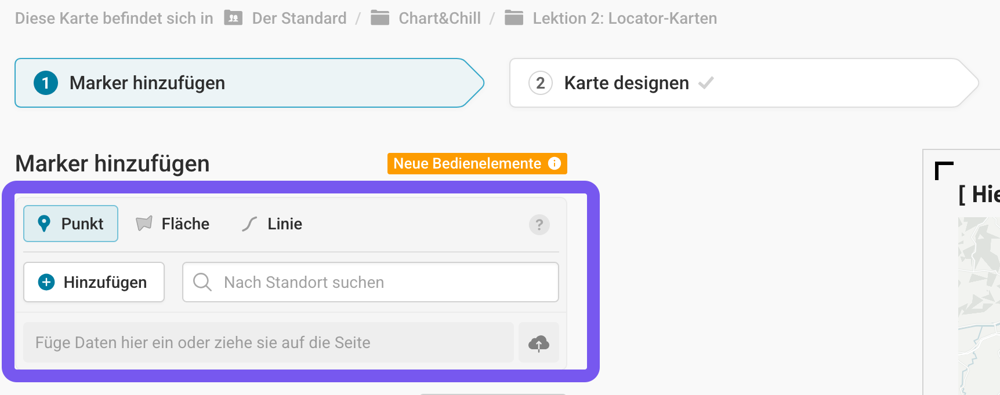
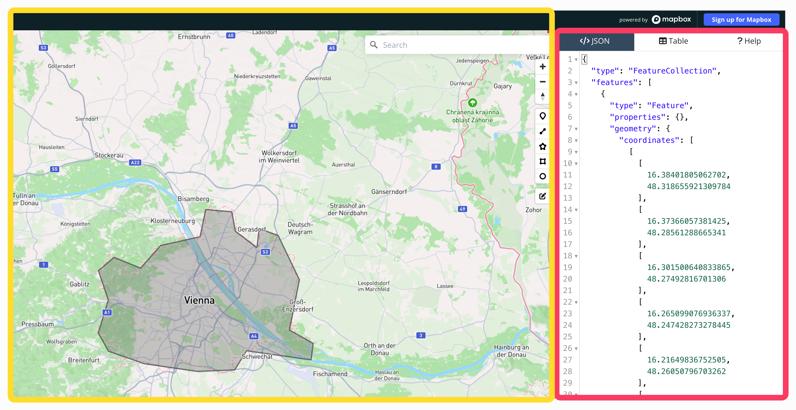

Chart & Chill Vol. 2
Neue Karte erstellen

Locator-Karte auswählen

Richtiges Layout auswählen (derzeit: Test)
Auf Mobile Ansicht umschalten

Kartenstil anpassen
- Auf Globus ändern wenn globale Daten gezeigt werden
Marker, Linien und Flächen hinzufügen
Wenige Farben
Klare Struktur

Auf Desktopansicht testen

Veröffentlichen und in Lido einbauen
Den Zum Teilen Link kopieren und in Lido einfügen!
Was sind Locator-Karten?
Locator Karten sind eine von drei Möglichkeiten in Datawrapper Karten zu machen
Sie sind besonders nützlich wo etwas ist (und das auf verschiedenen Skalen)
- Große Skala: In einem Artikel über eine bestimme Straße
- Mittlere Skala: Wo in Österreich liegt der Großglockner
- kleine Skala: Wo liegt Papua Neuguinea
Sie sind somit gut geeignet für das schnelle verorten von Dingen
- Punkte (Berge, Tatorte, Gebäude,…)
- Linien (Routen, Straßen,…)
- Flächen (Länder, Parzellen, Gebäudegrundrisse,…)
Was sind Locator-Karten nicht?
Sie sind (in der Regel) nicht datengetrieben
- Für die Frage: Wo sind die Mieten in Österreich am teuersten oder Wie war das Wahlergebnis auf Gemeindeebene sind andere Kartentypen besser geeignet
NICHHT GEEIGNET FÜR GRÖßENVERGLEIHE VON LÄNDERN
Sie sind NICHT zoombar -> keine Interaktivität das es wirklich nur um das Verorten geht!
Wie bekomme ich (Geo-) Daten in Locator-Karten?
Punkte und Flächen: (Mostly) In Datawrapper selbst:

Für Punkte und Flächen funktioniert das Suchfeld in Datawrapper ähnlich wie Google Maps
Einfach eingeben und auf Ergebnisvorschläge warten
Sollte es etwas nicht geben: Google Maps Links können auch kopiert werden!
- Sowohl von Orten wie hier
- Oder man macht einen Rechtklick in Google Maps und kopiert die Koordinaten und fügt sie dann einfach in Datawrapper ein!
Linien
Linien können nicht direkt in Datawrapper gezeichnet werden
Sie müssen entwerder bereits als Datei (ein sogenanntes geojson) vorliegen oder selber gezeichnet werden (am einfachsten in geojson.io)
GEOJSON.IO
Sehr nützlicher Broser-Editor um Punkte, Flächen und Linien selber zu zeichnen!
Während mann die Geometrie auf der Karte zeichnet baut sich rechts der Geojson-Code auf , der dann einfach zu Datawrapper kopiert werden kann. Oder man speichert ihn als geojson und läd ihn dann zu Datawrapper!

Externe Datenquellen
Das Datenformat: GEOJSON
Wie excel-Dateien für Grafiken, können für Karten sogenannte
geojson-Dateien verwendet werdenStrukturiertes, vorgegebenes Format für Punkte, Linien und Flächen
Punkte
{
"type": "Feature",
"geometry": {
"type": "Point",
"coordinates": [13.405, 52.520]
},
"properties": {
"name": "Berlin Fernsehturm"
}
}Linien
{
"type": "Feature",
"geometry": {
"type": "LineString",
"coordinates": [
[13.405, 52.520],
[13.415, 52.530],
[13.425, 52.525]
]
},
"properties": {
"name": "Chinesische Mauer"
}
}Flächen
{
"type": "Feature",
"geometry": {
"type": "Polygon",
"coordinates": [
[
[13.370, 52.515],
[13.380, 52.515],
[13.380, 52.520],
[13.370, 52.520],
[13.370, 52.515]
]
]
},
"properties": {
"name": "Versorgungsgebiet"
}
}Datenquellen
- data.gv.at wie z.B.
- Weltbank, Statistik Austria, Our World in Data veröffentlichen alle Geodaten in irgendeiner Form. Manchmal ist es notwendig sie in geojsons umzuwandeln. Da könnt ihr gerne auf uns zukommen!
Stylen in Datawrapper
- Sehr selbsterklärend und am besten hier schauen für Hilfe